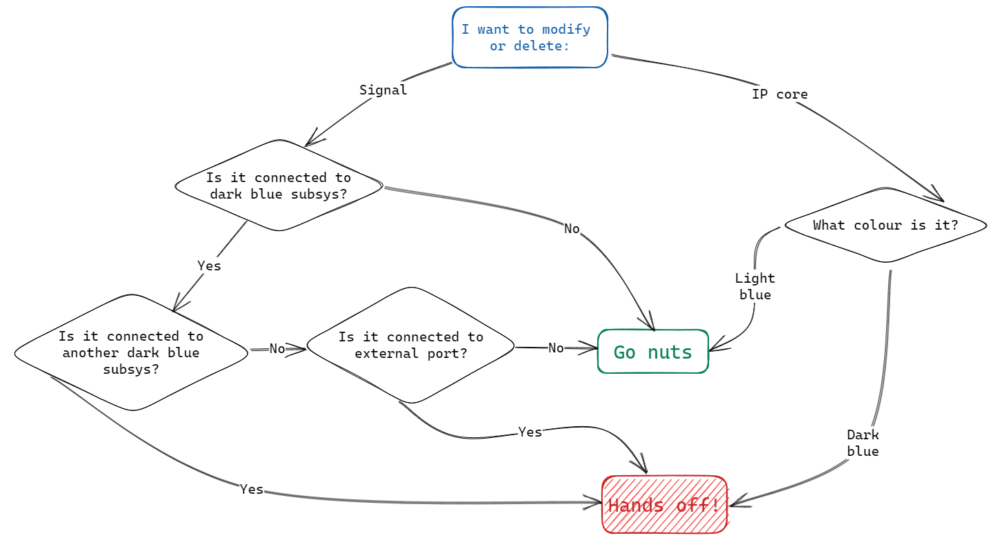

Reference project documentation
Intro¶
This reference project should serve as both a reference material and template for other implementations. As a rule of thumb, you are free to modify/delete any light-blue IP cores and any interconnection to/from/between them. There are three subsystems (dark-blue1) that provide basic functionality2, unless you have a specific requirement, you shouldn't have to do any modifications in any of them.
Decision tree for what you can modify:¶

Subsystems¶
ADC_subsys¶
Interface¶
Input¶
- adc_dat_i_a/b[15:0]
- Input ports of analog-digital converter, only upper 14 bits are usable.
- Format 0x0000...0x3FFF (1V...-1V)
- adc_clk_i_a/b
- Differential clock lines synchronized with ADC - Do not use directly!
Output¶
- adc_clk
- 125MHz Clock generated from differential ADC clock, free to use this one
- adc_cdcs_o
- ??? but do not modify and/or disconnect
- out_ADC_CH1/2[13:0]
- 14 bit analog input voltages in 2's complement format, 125 Msps (new sample every 8ns)
- Numbering corresponds to numbers printed on Red Pitaya PCB
Description¶
This module takes care of conversion of two things: First is converting signal from parallel lines of external ADC into 2's complement format and the second is generating single-line clock signal from differential clock. Additional hidden functionality explained in the next section.
Keep in mind that hardware analog->digital conversion takes around 100ns, meaning when voltage appears on AIN connector, it takes 100ns before it propagates to the FPGA (programmable logic) itself.
Big boy functionality¶
Upon expanding the subsystem, apart of signal slicing, there is RTL module axis_red_pitaya_adc_v1_0 which is based on Pavel Demin's ADC and it provides additional functionality of offsetting the signals by constant value. Provide desired offset to ports offset_a/b in 14bit 2's complement format.
Bypass signal controls whether the addition is performed
- 0 - addition bypassed
- 1 - addition performed
Note: Saturation check is in place, meaning if the addition operation was to over/underflow, it is rather capped at maximum/minimum value of 14 bit (fractional) integer.
DAC_subsys¶
Interface¶
Input¶
- data_DAC_CH1/2[13:0]
- Signals to be written to analog output ports.
- 14 bit 2's complement
- aclk
- Clock that the DAC (actual hardware component) will be synchronized to
- Usually recommended to be connected to ADC clock, but can be run from fclk (PS7 clock as well)
Output¶
- dac_xxx
- interface for DAC component, do not modify
Description¶
In similar sense as ADC, this does all necessary data conversion for DAC hardware component. It also generates doubled clock (dac_clk = 2 x aclk) from aclk port. Provide inputs in 2's complement format. aclk port should be connected to the clock domain where signals data_DAC_CH1/2 originate from.
PS7_w_DMA_subsys¶
Interface¶
Input¶
- dma_input_CH1/2[31:0]
- Input port for the data you want to record into external RAM (the big one)
- Bit-format of the data doesn't matter, it is parsed 1:1 into the memory and then you have to postprocess to extract the signals
- wr_clk
- Clock associated with dma_input_CH1/2 signals
- trigger_in_hw
- optional functionality to trigger DMA packet with PL signal instead of AXI register
- valid trigger signal is transition from 0 to 1
- new trigger signal ignored until current transfer is completed
Output¶
- clk
- also
fclk- 125 MHz clock synchronized with the ARM processor and AXI bus - IMPORTANT: phase between this clock and ADC clock is undeterministic, so make sure to treat clock-domain crossing appropriately
- also
- aresetn
- reset signal generated by the processor
- Active-low (0-reset, 1-no reset)
- M00_AXI
- AXI4 interface connected usually to your generated IP core
- DDR, FIXED_IO
- do not delete, do not modify!
- if DDR connection is severed, than the ARM processor is disconnected from the RAM as well, meaning you have to hard-reset Red Pitaya to get linux and everything back.
Description¶
This subsystem packages PS7 IP core (representing ARM processor in the PL) and DMA subsystem. DMA subsystem is probably going to evolve, so make sure to read changelog if you upgrade the DMA IP core in your design.
DMA operation¶
In the background, the procedure of recording data into RAM requires Xilinx DMA IP core (with Scatter-Gather engine) and throttle IP core module. Throttle IP core adds necessary signalling to convert continuous stream to AXI-Stream protocol. To initiate data recording, both throttle and DMA must be configured appropriately via the ARM processor (documented in Server library). By default, data transfer is initiated from AXI interface (i.e. by processor), but it can also be configured to wait for hardware signal (in the PL itself) instead.